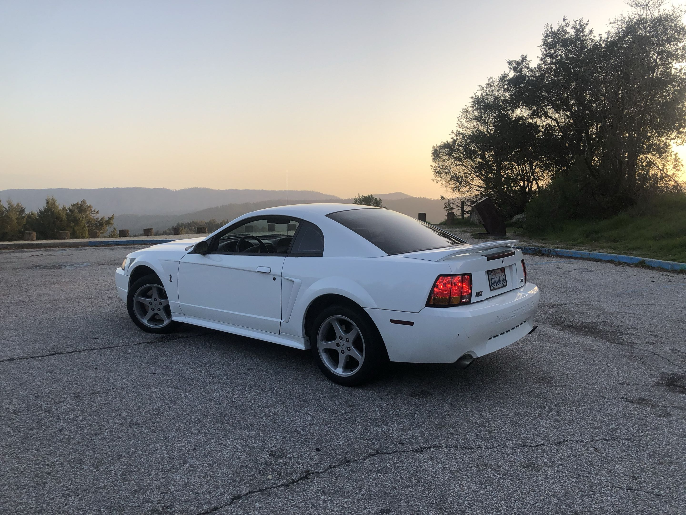
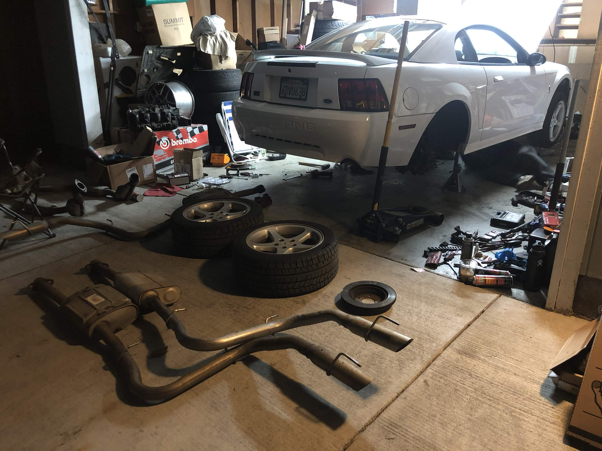
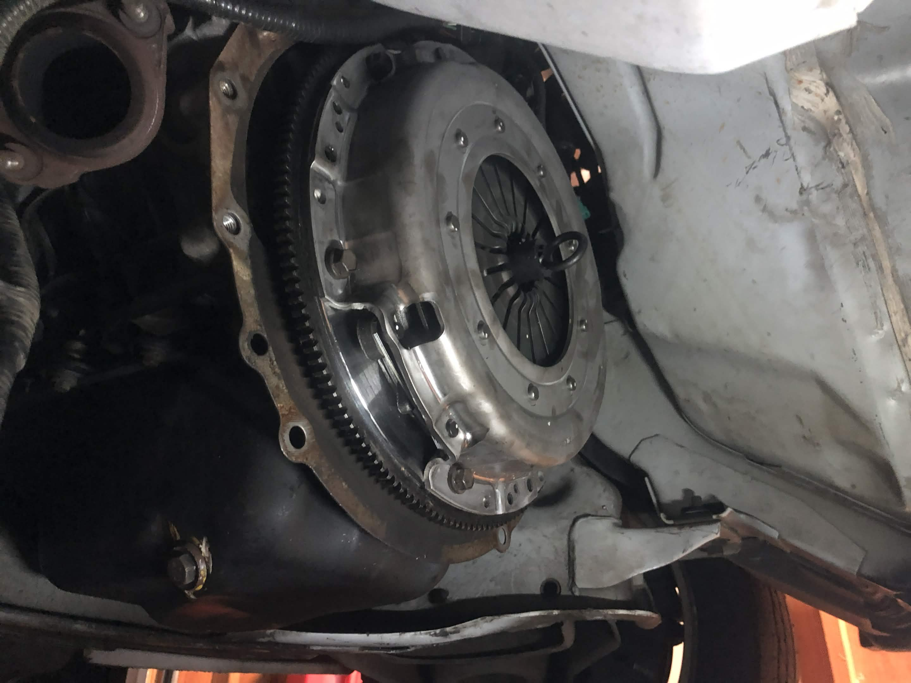
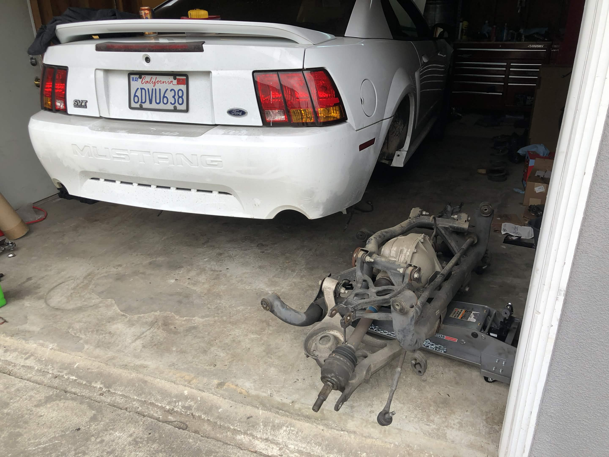
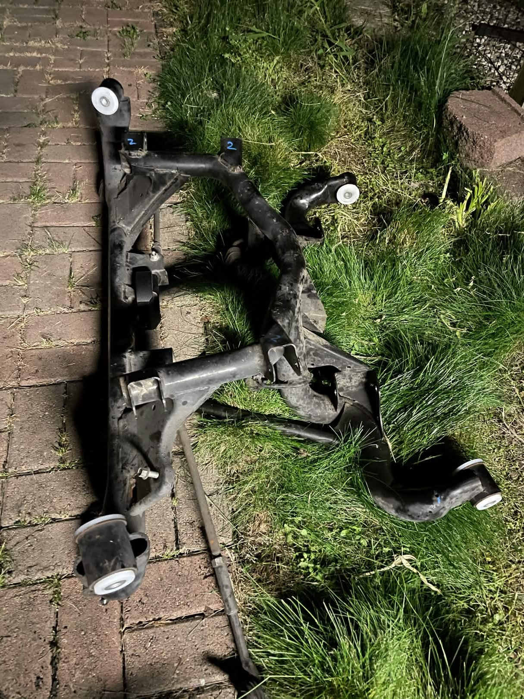
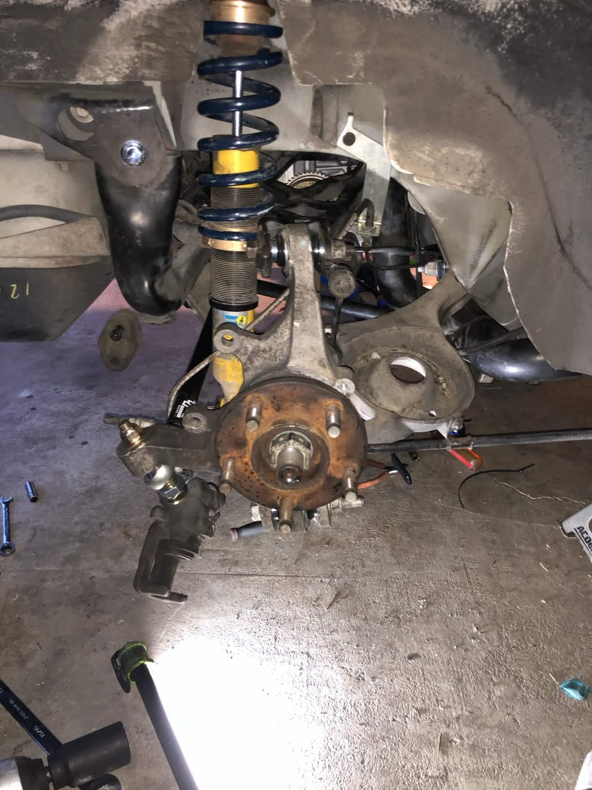
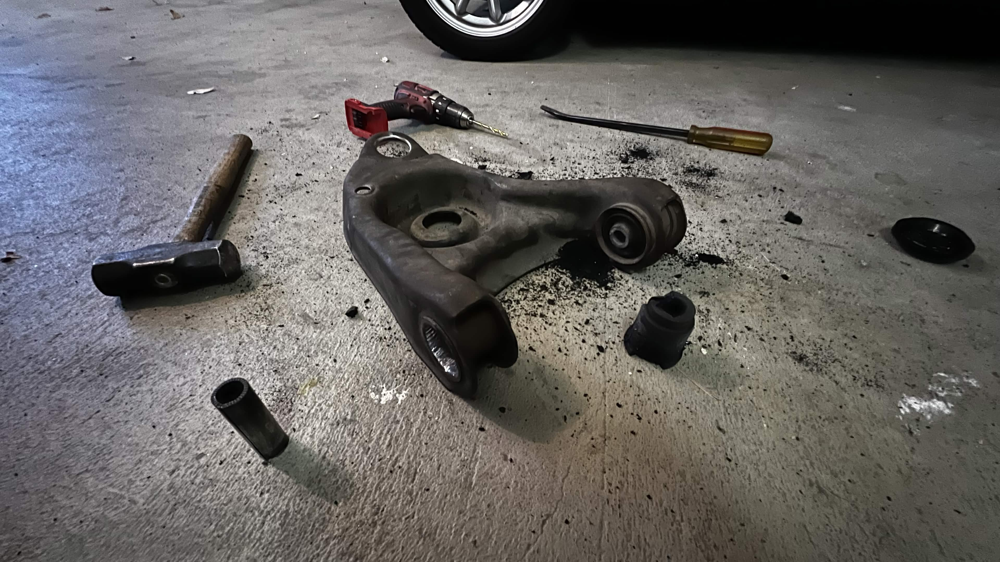

I picked up this 1999 Cobra in late 2020 from its second owner. It was a high-mileage car, so while the goal was to build a capable track car, the first phase was purely about resetting the "maintenance clock" and fixing factory weak points.

The 1999 Cobra in American Canyon.
The "New Edge" Mustang chassis is notorious for flexing and twisting under load. I first installed full-length subframe connectors to tie the car together. During the install, I actually found that the chassis had a slight twist from a previous owner. Getting the connectors in and squared up made a massive difference in how the car transfers weight and responds to steering inputs.

Subframe connector install along with brake maintenance.
I wanted the car to be more responsive, so I focused on reducing rotational mass and tightening up the shifting.

Halfway through transmission teardown.
The Independent Rear Suspension (IRS) on these cars is a great design, but was poorly executed from the factory with soft rubber bushings that cause severe wheel hop, a decision most likely made to reduce NVH since the car is a tourer after all. I tore the entire rear subframe out to do a full rebuild.

Bushings: I replaced every rubber piece with Delrin or UHMW. For the install, I used a heat and freeze method, freezing the new bushings to shrink them and using a blowtorch to expand the control arms/remove the old rubber.
Precision: I used aluminum shims to manually set the pinion angle to ensure proper power delivery and longevity.
Maintenance: I drilled and tapped Zerk grease fittings into the control arms so I can service the bushings after a track day without taking the car apart.
Gearing: I stepped up from the long stock 3.27 gears to a 4.30 Motive set to keep the engine in its power band and increase acceleration without having to sacrifice making the car non street legal.

I converted the rear to a Bilstein B6 coilover setup. The main reason was to get rid of the old spring and perch design that can actually unseat the spring if you hit a curb or two-wheel the car on track while cornering hard on a lowered setup. I also picked a setup that bumps the spring rates up (475-525 lb/in) to help the car rotate better on corner entry. This change woke up the car since it is set up to understeer (500-470 lb/in) for predictability.

On the engine side, these 4.6L motors have a known hot spot in the back two cylinders because of restricted coolant flow. To fix this, I installed a head cooling mod, which involves drilling into the cylinder head to add a new coolant path, and added a front-mounted oil cooler.
The project is currently on a brief hold while I finish school and balance a dual-job commitment. For now, I’ve kept it road-worthy by refreshing the steering rack and ball joints with OEM-equivalent parts. The long-term plan is a tubular front end to match the work I’ve already done on the rear.

Old, shredded rubber bushings removed using the drill and torch method.